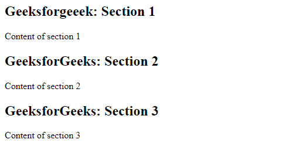

O que é

O elemento HTML
Nas versões anteriores do HTML não haviam tags com uma semântica apropriada para cada uma dessas divisões. Dessa forma, os desenvolvedores acabavam usando a tag < div > para todas as situações, e criando seus próprios padrões de nomeclaturas através dos atributos id ou class.
No HTML5 foram criadas diversas tags semânticas para indicar aos user-agents quais conteúdos estão sendo inseridos em cada uma das divisão da página, organizando e padronizando o desenvolvimento.
Utilização
A tag section é utilizada para marcar as seções de conteúdo de uma página. Com Esse elemento agrupamos de forma lógica nosso conteúdo, separando a informação em áreas diferentes. O principal objetivo é retirar essa responsabilidade das divs. Tendo como principal diferencial a navegação semântica com HTML 5.
Digamos que na sua página inicial você tenha três chamadas principais: Clientes, Serviços e Notícias. Aí um ótimo lugar para você usar a tag section. Cada uma dessas chamadas podem ser um elemento de seção. A tag pode ser usada em conjunto com o H1, H2, H3, H4, H5 e H6, elementos para indicar a estrutura do documento. Ele pode conter um header e um footer se necessário.
Diferença entre section e div
A tag section é utilizada para marcar as seções de conteúdo de uma página. Com Esse elemento agrupamos de forma lógica nosso conteúdo, separando a informação em áreas diferentes. O principal objetivo é retirar essa responsabilidade das divs. Tendo como principal diferencial a navegação semântica com HTML 5.